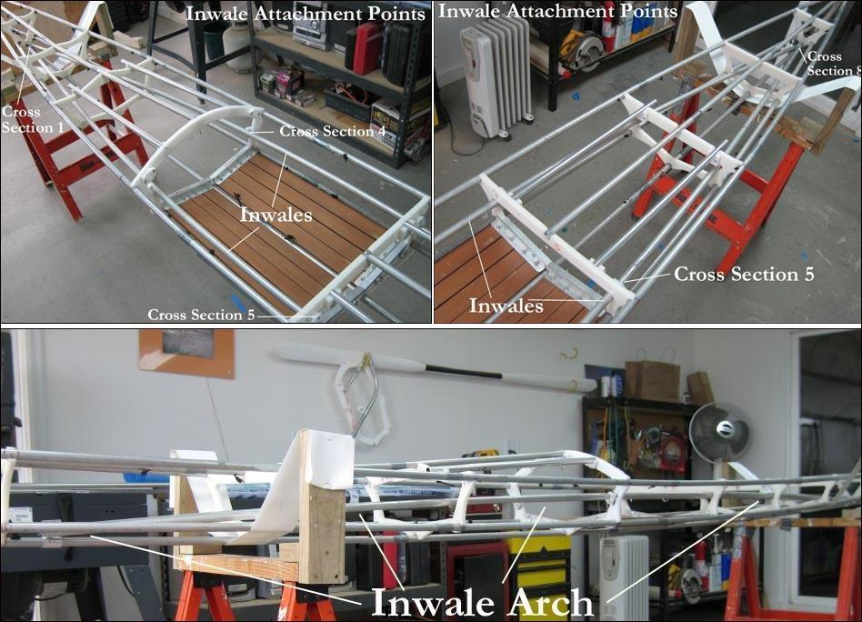

| "Arched" Inwales ( 1 of 5 ) | Menu Previous Page Next Page |
|

The newest inwale / internal bracing setup was developed by Bob Wright of Portland, Maine. Bob's system utilizes a internal brace that is "arched" from the keel near cross section 1, connects at the normal inwale location of cross section 5, and returns to the keel near cross section 8. The arch creates upward tension at the ends, therby maintaining rocker ( longitudinally), and resistance to twisting ( laterally) along the frame. I have tested this setup on my "Sea Rider" and am quite pleased not only with it's frame stiffening qualities, but equally important it's simplicity of design and assembly. The Sea Rider pics above show the shape of the inwale brace from above and from the side. The side view illustrates the amount of arch in the system. Construction is quite simple as is seen in the following pages. Pics of Bob's new "Sea Rover" frame and arched brace appear on the last page of this section.
|
|